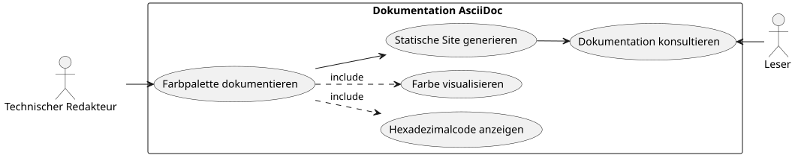
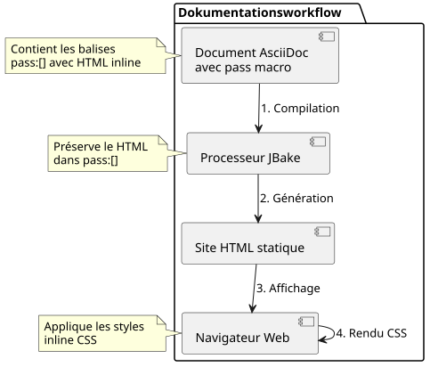

Farbig gefärbte Quadrate in AsciiDoc anzeigen: Praktischer Leitfaden
Publié le 01 November 2025
Einleitung
Bei der Erstellung technischer Dokumentation, beispielsweise für Stilhandbücher oder UI-Spezifikationen, ist es häufig erforderlich, Farbpaletten anzuzeigen. AsciiDoc, obwohl sehr mächtig für Dokumentation, bietet keine native Syntax zur Anzeige von Farbmustern. Dieser Artikel untersucht das Problem und schlägt eine elegante Lösung auf Basis von HTML-Injection vor.
Die Problematik
Anwendungskontext
Stellen Sie sich vor, Sie dokumentieren die CSS-Variablen eines Webanwendungs-Themas. Sie benötigen :
-
Liste die hexadezimalen Farbcodes
-
Einen visuellen Überblick über jede Farbe anzeigen
-
Maintenir la lisibilité du document source
-
Sicherstellen der Kompatibilität mit statischen Site-Generatoren wie JBake

Mögliche Ansätze
Es gibt mehrere Lösungen, die in Betracht gezogen werden können, um Farben in einem AsciiDoc-Dokument anzuzeigen:
Option 1 : Unicode-Zeichen
Die Verwendung von Unicode-Zeichen wie`■`(■) ist einfach aber begrenzt :
* ■ --accent-color: #7952b3 (violet Bootstrap)Einschränkungen: Keine Kontrolle über die Farbe, hängt von der Systemschriftart ab.
Option 2: Externe Bilder
Erstellen Sie PNG- oder SVG-Bilder für jede Farbe:
* image:colors/violet.svg[width=16] --accent-color: #7952b3Limitations : Schwerwartung, Vermehrung der Dateien, keine automatische Synchronisation.
Option 3: Benutzerdefinierte CSS-Rollen
Definiere CSS-Klassen und wende sie über AsciiDoc-Rollen an:
* [.color-violet]##■## --accent-color: #7952b3Limitations : Erfordert ein externes Stylesheet, vorherige Definition aller möglichen Farben.
Option 4: HTML-Injection (gewählte Lösung)
Die Makro verwenden``Um HTML mit Inline-Stilen einzufügen :
* pass:[<span style="display:inline-block;width:1em;height:1em;
background:#7952b3;vertical-align:middle;margin-right:0.5em"></span>]
--accent-color: #7952b3 (violet Bootstrap)Die Lösung: HTML-Injektion mit
Funktionsprinzip
Das Makro``d’AsciiDoc erlaubt das Einfügen von rohem Inhalt, der nicht vom AsciiDoc-Prozessor interpretiert wird. Dadurch können wir direkt HTML mit Inline-CSS-Stilen einfügen.
Failed to generate image: PlantUML preprocessing failed: [From <input> (line 3) ] @startuml participant "Dokument\nAsciiDoc" as doc participant "Prozessor ^^^^^ Syntax Error? (Assumed diagram type: sequence) @startuml participant "Dokument\nAsciiDoc" as doc participant "Prozessor AsciiDoc" as processor participant "pass:[] Makro" as pass participant "HTML endgültig" as html doc -> processor : Analyse document processor -> pass : Détecte pass:[] pass -> processor : Retourne HTML brut processor -> html : Insère sans transformation html -> html : Navigateur applique styles @enduml
Implementierung
Hier ist die HTML-Struktur, die eingefügt werden soll:
<span style="display:inline-block;
width:1em;
height:1em;
background:#7952b3;
vertical-align:middle;
margin-right:0.5em">
</span>Erklärung der CSS-Eigenschaften
| Eigentum | Funktion |
|---|---|
|
Ermöglicht das Definieren von width/height, während es im inline-Fluss bleibt |
|
Quadratgröße relativ zur Schriftgröße (responsive) |
|
Die anzuzeigende Farbe (variabel je nach Ihren Bedürfnissen) |
|
Richte das Quadrat mit dem angrenzenden Text aus |
|
Abstand zwischen dem Quadrat und dem Text |
Vollständiges Beispiel
Hier ist ein Beispiel, das eine Themenpalette dokumentiert :
== Thème Clair
* pass:[<span style="display:inline-block;width:1em;height:1em;background:#f8f9fa;border:1px solid #ccc;vertical-align:middle;margin-right:0.5em"></span>] --bg-primary: `#f8f9fa` (blanc cassé)
* pass:[<span style="display:inline-block;width:1em;height:1em;background:#212529;vertical-align:middle;margin-right:0.5em"></span>] --text-primary: `#212529` (noir très foncé)
* pass:[<span style="display:inline-block;width:1em;height:1em;background:#7952b3;vertical-align:middle;margin-right:0.5em"></span>] --accent-color: `#7952b3` (violet Bootstrap)
* pass:[<span style="display:inline-block;width:1em;height:1em;background:#61428f;vertical-align:middle;margin-right:0.5em"></span>] --accent-hover: `#61428f` (violet plus foncé)
* pass:[<span style="display:inline-block;width:1em;height:1em;background:#ffffff;border:1px solid #ccc;vertical-align:middle;margin-right:0.5em"></span>] --card-bg: `#ffffff` (blanc)Wer erzeugt die folgende Ausgabe :
Helles Thema
-
--bg-primary:`#f8f9fa`(weiß gebrochen)
-
--text-primary:`#212529`(sehr dunkles Schwarz)
-
--accent-color:`#7952b3`(violet Bootstrap)
-
import sys
sys.stdout.write(sys.stdin.read())#61428f(dunkleres Violett)
-
--card-bg:`#ffffff`(weiß)
Optimierungen und bewährte Praktiken
Helle Farben verwalten
Für sehr helle Farben (weiß, sehr helles Grau) füge einen Rahmen hinzu, damit sie auf weißem Hintergrund sichtbar sind:
<span style="display:inline-block;width:1em;height:1em;
background:#ffffff;border:1px solid #ccc;
vertical-align:middle;margin-right:0.5em"></span>Die graue Grenze`border:1px solid #ccc`) ermöglicht das Begrenzen des weißen Quadrats auf einem weißen Hintergrund.
Die Größe der Quadrate anpassen
Sie können die Größe der Quadrate nach Ihren Bedürfnissen anpassen :
* pass:[<span style="display:inline-block;width:1.5em;height:1.5em;background:#7952b3;vertical-align:middle;margin-right:0.5em"></span>] Grand carré
* pass:[<span style="display:inline-block;width:0.8em;height:0.8em;background:#7952b3;vertical-align:middle;margin-right:0.5em"></span>] Petit carréDie Verwendung der Einheit`em`garantiert, dass die Quadrate sich an die Schriftgröße anpassen.
Varianten erstellen
Für spezielle Anforderungen können Sie verschiedene Formen erstellen:
farbiger Kreis
* pass:[<span style="display:inline-block;width:1em;height:1em;background:#7952b3;border-radius:50%;vertical-align:middle;margin-right:0.5em"></span>] Cercle violetQuadrat mit farbigem Rand
* pass:[<span style="display:inline-block;width:1em;height:1em;background:#ffffff;border:3px solid #7952b3;vertical-align:middle;margin-right:0.5em"></span>] Bordure violetteArchitektur der Lösung

Vorteile und Grenzen
Vorteile
-
�✓ Autonomie : Keine Abhängigkeit von externen Dateien
-
✓ Portabilität : Funktioniert mit allen AsciiDoc-Prozessoren
-
✓ Synchronisation : Der Farbcode ist direkt im HTML
-
�✓ Flexibilität : Vollständige Personalisierung des Stils
-
�✓ Wartung : Einfache Änderung des hexadezimalen Codes
-
�✓ JBake-Kompatibilität : Funktioniert perfekt mit statischen Site-Generatoren
Einschränkungen
-
✗ Ausführlichkeit : Wiederholender HTML-Code im AsciiDoc-Quellcode
-
✗ Lisibilité source : Le document source est moins épuré
-
�✗ Barrierefreiheit : Kein nativer Alternativtext (manuell hinzufügen)
Verbesserung der Zugänglichkeit
Um die Quadrate für Bildschirmlesegeräte zugänglich zu machen :
* pass:[<span role="img" aria-label="Couleur violet Bootstrap"
style="display:inline-block;width:1em;height:1em;background:#7952b3;
vertical-align:middle;margin-right:0.5em"></span>]
--accent-color: `#7952b3` (violet Bootstrap)Die Attribute`role="img"` et `aria-label`Sie ermöglichen assistiven Technologien, visuelle Inhalte zu verstehen und zu beschreiben.
Konkretes Beispiel: Dokumentation von Themen
Hier ist ein vollständiges Beispiel, das mehrere Themen dokumentiert :
= Guide des couleurs de l'application
== Thème Clair (`:root`)
* pass:[<span style="display:inline-block;width:1em;height:1em;background:#f8f9fa;border:1px solid #ccc;vertical-align:middle;margin-right:0.5em"></span>] --bg-primary: `#f8f9fa` (blanc cassé)
* pass:[<span style="display:inline-block;width:1em;height:1em;background:#212529;vertical-align:middle;margin-right:0.5em"></span>] --text-primary: `#212529` (noir très foncé)
* pass:[<span style="display:inline-block;width:1em;height:1em;background:#7952b3;vertical-align:middle;margin-right:0.5em"></span>] --accent-color: `#7952b3` (violet Bootstrap)
== Thème Sombre (`[data-bs-theme="dark"]`)
* pass:[<span style="display:inline-block;width:1em;height:1em;background:#212529;vertical-align:middle;margin-right:0.5em"></span>] --bg-primary: `#212529` (noir très foncé)
* pass:[<span style="display:inline-block;width:1em;height:1em;background:#ffffff;border:1px solid #999;vertical-align:middle;margin-right:0.5em"></span>] --text-primary: `#ffffff` (blanc)
* pass:[<span style="display:inline-block;width:1em;height:1em;background:#0d6efd;vertical-align:middle;margin-right:0.5em"></span>] --accent-color: `#0d6efd` (bleu Bootstrap)
== Thème Contraste Élevé (`[data-bs-theme="high-contrast"]`)
* pass:[<span style="display:inline-block;width:1em;height:1em;background:#000000;vertical-align:middle;margin-right:0.5em"></span>] --bg-primary: `#000000` (noir)
* pass:[<span style="display:inline-block;width:1em;height:1em;background:#ffffff;border:1px solid #000;vertical-align:middle;margin-right:0.5em"></span>] --text-primary: `#ffffff` (blanc)
* pass:[<span style="display:inline-block;width:1em;height:1em;background:#00ff00;vertical-align:middle;margin-right:0.5em"></span>] --accent-color: `#00ff00` (vert vif)Fazit
Die HTML‑Injektion über das Makro``d’AsciiDoc bietet eine elegante und pragmatische Lösung zur Anzeige von Farbmustern in der technischen Dokumentation. Obwohl etwas umständlich, gewährleistet dieser Ansatz maximale Portabilität und vereinfachte Wartung.
Diese Technik erfordert keine externe Konfiguration, kein zusätzliches Stylesheet und funktioniert sofort mit JBake und allen Standard-AsciiDoc-Prozessoren.
Sobald du dein erstes farbiges Quadrat erstellt hast, musst du nur den HTML-Code kopieren und einfügen und den Hexadezimalcode ändern, um schnell eine vollständige Farbpalette zu erstellen.
Diese Technik kann auf andere Anwendungsfälle erweitert werden, die ein benutzerdefiniertes visuelles Rendering erfordern: Symbole, Abzeichen, einfache Diagramme oder jedes visuelle Element, das eine präzise Stilkontrolle erfordert.
Ressourcen
Artikel veröffentlicht am 2025-11-01